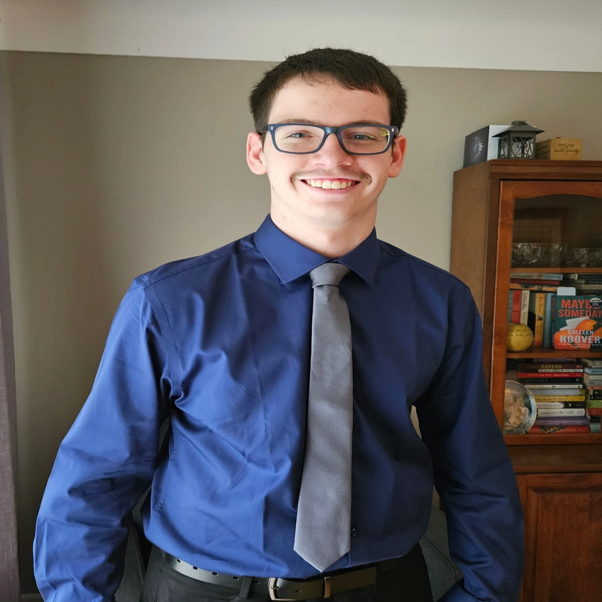

Hi, I'm Matthew Duncan
I’m currently a first-year Computer Science student with a strong passion for programming, problem-solving, and automation. I’ve worked with a variety of languages and tools, including C, C++, Java, SQL Server, Python, as well as HTML and CSS, which I used to build this very site. I’ve already had the opportunity to participate in programming competitions like ICPC, where I put my problem-solving skills to the test in a team-based environment. Outside of competitions, I’ve practiced creating personal projects that explore areas like algorithm design, database management, and UI development. I take pride in writing clean, efficient code and enjoy the process of turning complex problems into practical solutions. I’m constantly seeking new challenges and opportunities to expand my skills, and I’m especially excited to dive deeper into topics like backend development and systems programming. My long-term goal is to become a Software Engineer and help design solutions that have a meaningful, lasting impact. I’m driven by the idea of building software that not only solves problems but also shapes the way people live and interact with technology. And now for a more personal side of things; when I’m not immersed in code, I love spending time with friends, whether it’s hanging out, playing games, or just enjoying good company. One of my greatest passions is Taekwondo, where I not only practice but also teach and help others improve their skills. It’s taught me discipline, patience, and the importance of perseverance which are values I can carry over into my programming. Outside of martial arts and tech, I’m a very eager reader, always looking for new books to dive into, whether it’s fiction or non-fiction (usually fiction though). I believe reading helps keep the mind fresh and helps to create good ideas. Of course, I’m also a fan of video games as they’re a great way to unwind, and I love the challenge and replayability they offer especially in roguelikes.